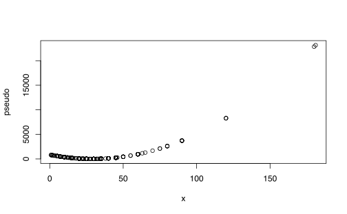
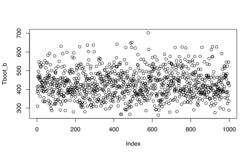
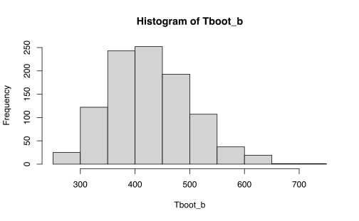
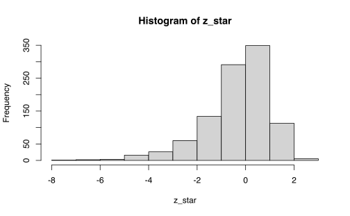

Capítulo 3 Jackknife y Bootstrap
Suponga que se quiere estimar un intervalo de confianza para la media \(\mu\) desconocida de un conjunto de datos \(X_{1},\ldots, X_{n}\) que tiene distribución \(\mathcal{N}\left(\mu ,\sigma^{2}\right)\).
Primero se conoce que
\[\begin{equation*} \sqrt{n}\left( \hat{\mu} - \mu \right) \sim \mathcal{N}\left(0,\sigma^{2}\right), \end{equation*}\]
y esto nos permite escribir el intervalo de confianza como
\[\begin{equation*} \left[ \hat{\mu} - \hat{\sigma}z_{1-\frac{\alpha}{2}} , \hat{\mu} + \hat{\sigma}z_{1-\frac{\alpha}{2}}\right] \end{equation*}\]
donde \(z_{1-\frac{\alpha}{2}}\) es el cuantil \(1-\frac{\alpha}{2}\) de una normal estándar.
La expresión anterior es posible dado que la distribución de \(\hat{\mu}\) es normal.
Nota:. ¿Qué pasaría si no conocemos la distribución de \(\hat{\mu}\)?
¿Cómo podemos encontrar ese intervalo de confianza?
3.1 Caso concreto
Suponga que tenemos la siguiente tabla de datos, que representa una muestra de tiempos y distancias de viajes en Atlanta.
Cargamos la base de la siguiente forma:
CommuteAtlanta <- read.csv2("data/CommuteAtlanta.csv")| City | Age | Distance | Time | Sex |
|---|---|---|---|---|
| Atlanta | 19 | 10 | 15 | M |
| Atlanta | 55 | 45 | 60 | M |
| Atlanta | 48 | 12 | 45 | M |
| Atlanta | 45 | 4 | 10 | F |
| Atlanta | 48 | 15 | 30 | F |
| Atlanta | 43 | 33 | 60 | M |
Para este ejemplo tomaremos la variable que la llamaremos para ser más breves. En este caso note que
x <- CommuteAtlanta$TimeLa media es 29.11 y su varianza 429.2483968. Para efectos de lo que sigue, asignaremos la varianza a la variable \(T_n\)
Tn <- var(x)A partir de estos dos valores, ¿Cuál sería un intervalo de confianza para la varianza?
Note que esta pregunta es difícil ya que no tenemos ningún tipo de información adicional para inferir la variación de la varianza \(T_n\).
Las dos técnicas que veremos a continuación nos permitirán extraer información adicional de la muestra para inferir propiedades distribucionales de \(T_n\).
Nota:. Para efectos de este capítulo, llamaremos \(T_{n}=T\left( X_{1},\ldots,X_{n}\right)\) al estadístico \(T\) formado por la muestra de los \(X_{i}\)’s.
3.2 Jackknife
Esta técnica fue propuesta por (Quenouille 1949). Primero que todo se puede probar que existen estimadores que cumplen la siguiente propiedad:
\[\begin{equation} \operatorname{Sesgo}\left(T_{n}\right)=\frac{a}{n}+\frac{b}{n^{2}}+O\left(\frac{1}{n^{3}}\right) \end{equation}\]
para algún \(a\) and \(b\).
Por ejemplo sea \(\sigma^{2}=\mathrm{Var}\left(X_{i}\right)\) y sea \(\widehat{\sigma}_{n}^{2}=n^{-1} \sum_{i=1}^{n}\left(X_{i}-\right.\) \(\bar{X})^{2}\). Entonces,
\[\begin{equation*} \mathbb{E}\left(\widehat{\sigma}_{n}^{2}\right)= \frac{n-1}{n}\sigma^{2} \end{equation*}\]
por lo tanto
\[\begin{equation*} \mathrm{Sesgo} = -\frac{\sigma^{2}}{n} \end{equation*}\]
Por lo tanto en este caso \(a=-\sigma^{2}\) y \(b=0\).
Defina \(T_{(-i)}\) como el estimador \(T_{n}\) pero eliminando el \(i\)-ésimo elemento de la muestra.
Es claro que en este contexto, se tiene que
\[\begin{equation} \operatorname{Sesgo}\left(T_{(-i)}\right)=\frac{a}{n-1}+\frac{b}{(n-1)^{2}}+O\left(\frac{1}{(n-1)^{3}}\right) \end{equation}\]
Ejercicio 3.1 Una forma fácil de construir los \(T_{(-i)}\) es primero replicando la matriz de datos múltiple veces usando el producto de kronecker
n <- length(x)
jackdf <- kronecker(matrix(1, 1, n), x)| 15 | 15 | 15 | 15 | 15 | 15 | 15 | 15 | 15 | 15 |
| 60 | 60 | 60 | 60 | 60 | 60 | 60 | 60 | 60 | 60 |
| 45 | 45 | 45 | 45 | 45 | 45 | 45 | 45 | 45 | 45 |
| 10 | 10 | 10 | 10 | 10 | 10 | 10 | 10 | 10 | 10 |
| 30 | 30 | 30 | 30 | 30 | 30 | 30 | 30 | 30 | 30 |
| 60 | 60 | 60 | 60 | 60 | 60 | 60 | 60 | 60 | 60 |
| 45 | 45 | 45 | 45 | 45 | 45 | 45 | 45 | 45 | 45 |
| 10 | 10 | 10 | 10 | 10 | 10 | 10 | 10 | 10 | 10 |
| 25 | 25 | 25 | 25 | 25 | 25 | 25 | 25 | 25 | 25 |
| 15 | 15 | 15 | 15 | 15 | 15 | 15 | 15 | 15 | 15 |
Y luego se elimina la diagonal
diag(jackdf) <- NA| NA | 15 | 15 | 15 | 15 | 15 | 15 | 15 | 15 | 15 |
| 60 | NA | 60 | 60 | 60 | 60 | 60 | 60 | 60 | 60 |
| 45 | 45 | NA | 45 | 45 | 45 | 45 | 45 | 45 | 45 |
| 10 | 10 | 10 | NA | 10 | 10 | 10 | 10 | 10 | 10 |
| 30 | 30 | 30 | 30 | NA | 30 | 30 | 30 | 30 | 30 |
| 60 | 60 | 60 | 60 | 60 | NA | 60 | 60 | 60 | 60 |
| 45 | 45 | 45 | 45 | 45 | 45 | NA | 45 | 45 | 45 |
| 10 | 10 | 10 | 10 | 10 | 10 | 10 | NA | 10 | 10 |
| 25 | 25 | 25 | 25 | 25 | 25 | 25 | 25 | NA | 25 |
| 15 | 15 | 15 | 15 | 15 | 15 | 15 | 15 | 15 | NA |
Cada columna contiene toda la muestra excepto el \(i\)-ésimo elemento. Solo basta estimar la media de cada columna:
T_i <- apply(jackdf, 2, var, na.rm = TRUE)| x |
|---|
| 429.7098 |
| 428.1905 |
| 429.6023 |
| 429.3756 |
| 430.1087 |
| 428.1905 |
| 429.6023 |
| 429.3756 |
| 430.0764 |
| 429.7098 |
Definimos el estimador de sesgo jackknife de \(T_n\) como
\[\begin{equation*} b_{jack} = (n-1) (\overline{T}_{n} - T_{n}) \end{equation*}\]
donde \[\begin{equation*} \overline{T}_{n} = \frac{1}{n} \sum_{i=1}^{n} T_{(-i)} \end{equation*}\]
y el estimador corregido por sesgo es: \(T_{jack}=T_n-b_{jack}\). ::: {.exercise #unnamed-chunk-74} En nuestro caso tendríamos lo siguiente: :::
(bjack <- (n - 1) * (mean(T_i) - Tn))## [1] 0Es decir, el sesgo aproximado (jackknife) del estimador \(T_n\) es 0.
Si se asume que \(T_n\) es un estimador del parámetro \(\theta\) entonce se puede comprobar que \(b_{jack}\) cumple:
\[\begin{align*} \mathbb{E}\left(b_{\text {jack}}\right) &= (n-1)\left(\mathbb{E}\left[\overline{T}_{n}\right] - \mathbb{E}\left[T_{n}\right]\right) \\ &= (n-1)\left(\mathbb{E}\left[\overline{T}_{n}\right] - \theta + \theta - \mathbb{E}\left[T_{n}\right]\right) \\ & =(n-1)\left(\mathrm{Sesgo} \left(\overline{T}_{n}\right) -\mathrm{Sesgo}\left(T_{n}\right)\right) \\ & =(n-1)\left[\left(\frac{1}{n-1} -\frac{1}{n}\right) a+\left(\frac{1}{(n-1)^{2}} -\frac{1}{n^{2}}\right) b+O\left(\frac{1}{n^{3}}\right)\right] \\ & =\frac{a}{n} +\frac{(2 n-1) b}{n^{2}(n-1)} +O\left(\frac{1}{n^{2}}\right) \\ & =\operatorname{Sesgo}\left(T_{n}\right) +O\left(\frac{1}{n^{2}}\right)\\ \end{align*}\]
Nota:. Es decir, en general, el estimador \(b_{\text{jack}}\) aproxima correctamente \(\mathrm{Sesgo}\left( T_{n} \right)\) hasta con un error del \(n^{-2}\).
Podemos usar los \(T_i\) para generar muestras adicionales para estimar el parámetro \(\theta\) a través del siguiente estimador:
\[ \widetilde{T}_{i}=n T_{n}-(n-1) T_{(-i)}. \]
Nota:. A \(\widetilde{T}_{i}\) se le llaman pseudo-valor y representa el aporte o peso que tiene la variable \(X_{i}\) para estimar \(T_{n}\).
Ejercicio 3.2 Usado un cálculo similar para el \(b_{jack}\) pruebe que
\[ \operatorname{Sesgo}\left(T_{\text {jack} }\right)=-\frac{b}{n(n-1)}+O\left(\frac{1}{n^{2}}\right)=O\left(\frac{1}{n^{2}}\right). \]
¿Qué conclusión se obtiene de este cálculo?
Ejercicio 3.3 Los pseudo-valores se estiman de forma directa como,
pseudo <- n * Tn - (n - 1) * T_i
pseudo[1:10]## [1] 199.02972209 957.16225222 252.64417993 365.79679037 -0.06666345
## [6] 957.16225222 252.64417993 365.79679037 16.09799519 199.02972209Lo importante acá es notar la asociación o correspondencia que tiene con los datos reales,
plot(x = x, y = pseudo)
Con estos pseudo-valores, es posible estimar la media y la varianza de \(T_{n}\) con los siguientes estimadores respectivos:
\[ T_{\text {jack }}=\frac{1}{n} \sum_{i=1}^{n} \widetilde{T}_{i} \]
y
\[ v_{jack}=\frac{\sum_{i=1}^{n}\left(\widetilde{T}_{i}-\frac{1}{n} \sum_{i=1}^{n} \widetilde{T}_{i}\right)^{2}}{n-1}. \]
Nota:. Sin embargo, se puede demostrar fácilmente que se pueden usar pseudovalores para construir una prueba normal de hipótesis.
Como los pseudovalores son idénticamente distribuidos entonces su promedio se ajusta de forma aproximada a una distribución normal a medida que el tamaño de la muestra aumenta. Por lo tanto, tenemos que \[ \frac{\sqrt{n}\left(T_{jack}-\theta\right)}{\sqrt{v_{jack}}} \rightarrow N(0,1). \]
(Tjack <- mean(pseudo))## [1] 429.2484(Vjack <- var(pseudo, na.rm = TRUE))## [1] 2701991(sdjack <- sqrt(Vjack))## [1] 1643.774(z <- qnorm(1 - 0.05/2))## [1] 1.959964c(Tjack - z * sdjack/sqrt(n), Tjack + z * sdjack/sqrt(n))## [1] 285.1679 573.32893.3 Bootstrap
Este método es un poco más sencillo de implementar que Jackknife y es igualmente de eficaz. Este fue propuesto por Bradley Efron en (Efron 1979).
Primero recordemos que estamos estimando la variabilidad propia de un estadístico a partir de una muestra. Asuma que este estadístico tiene la forma \(T_{n}=g\left( X_{1},\ldots,X_{n} \right)\) donde \(g\) es cualquier función (media, varianza, quantiles, etc).
Supongamos que conocemos la distribución real de los \(X\)’s, llamada \(F(x)\) y asumamos que \(T_n=\bar X_n\). Si uno quisiera estimar la varianza de \(T_n\) basta con hacer
\[\begin{equation*} \mathbb{V}_{F}\left(T_{n}\right):=\mathrm{Var}_{F}\left(T_{n}\right) = \frac{\sigma^{2}}{n}=\frac{\int x^{2} dF(x)-\left(\int x dF(x)\right)^{2}}{n} \end{equation*}\]
donde \(\sigma^{2} = \mathrm{Var}\left(X\right)\) y el subindice \(F\) es solo para indicar la dependencia con la distribución real.
Ahora dado que no tenemos la distribución real \(F(x)\), una opción es utilizar el estimador empírico \(\hat{F}_n\) como estimador plug-in en la formulación de la varianza de \(T_n\).
De manera sencilla se puede resumir la técnica de bootstrap como una simulación iid de la distribución \(\hat{F}_n\) de modo que se pueda conocer la varianza del estadístico \(T_n\).
En simples pasos la técnica es
- Seleccione \(X_{1}^{*}, \ldots, X_{n}^{*} \sim \widehat{F}_{n}\)
- Estime \(T_{n}^{*}=g\left(X_{1}^{*}, \ldots, X_{n}^{*}\right)\)
- Repita los Pasos 1 y 2, \(B\) veces para obtener \(T_{n, 1}^{*}, \ldots, T_{n, B}^{*}\)
- Estime \[ v_{\mathrm{boot}}=\frac{1}{B} \sum_{b=1}^{B}\left(T_{n, b}^{*}-\frac{1}{B} \sum_{r=1}^{B} T_{n, r}^{*}\right)^{2} \]
Por la ley de los grandes números tenemos que
\[\begin{equation} v_{\mathrm{boot}} \stackrel{\mathrm{a.s.}}{\longrightarrow} \mathbb{V}_{\widehat{F}_{n}}\left(T_{n}\right), \quad \text{si} \quad B\rightarrow \infty. \end{equation}\]
además llamaremos,
\[\begin{equation*} \widehat{\mathrm{se}}_{\mathrm{boot}}=\sqrt{v_{\mathrm{boot}}} \end{equation*}\]
En pocas palabras lo que tenemos es que
\[\begin{align*} \text {Mundo Real: } & F & \Longrightarrow X_{1}, \ldots, X_{n} & \Longrightarrow & T_{n} = g\left(X_{1}, \ldots, X_{n}\right) \\ \text {Mundo Bootstrap: } & \widehat{F}_{n} & \Longrightarrow X_{1}^{*}, \ldots, X_{n}^{*} & \Longrightarrow & T_{n}^{*}=g\left(X_{1}^{*}, \ldots, X_{n}^{*}\right) \end{align*}\]
En términos de convergencia lo que se tiene es que \[ \mathrm{Var}_{F}\left(T_{n}\right) \overbrace{\approx}^{O(1 / \sqrt{n})} \mathrm{Var}_{\widehat{F}_{n}}\left(T_{n}\right) \overbrace{\approx}^{O(1 / \sqrt{B})} v_{b o o t} \]
producto de la ley de grandes números en ambos casos.
Nota:. ¿Cómo extraemos una muestra de \(\hat{F}_n\)?
Recuerden que \(\hat{F}_{n}\) asigna la probabilidad de \(\frac{1}{n}\) a cada valor usado para construirla.
Por lo tanto, todos los puntos originales \(X_{1},\ldots,X_{n}\) tienen probabilidad \(\frac{1}{n}\) de ser escogidos, que resulta ser equivalente a un muestreo con remplazo \(n\)-veces.
Así que basta cambiar el punto 1. del algoritmo mencionando anteriormente con
- Seleccione una muestra con remplazo \(X_{1}^{*}, \ldots, X_{n}^{*}\) de \(X_{1},\ldots,X_{n}\).
Ejercicio 3.4 En este ejemplo podemos tomar \(B=1000\) y construir esa cantidad de veces nuestro estimador de varianza:
B <- 1000
Tboot_b <- NULL
for (b in 1:B) {
xb <- sample(x, size = n, replace = TRUE)
Tboot_b[b] <- var(xb)
}
Tboot_b[1:10]## [1] 414.1915 391.2966 310.2777 468.8409 400.5235 380.8023 496.4924 418.5968
## [9] 461.3902 547.3446plot(Tboot_b)
hist(Tboot_b)
Por supuesto podemos encontrar los estadísticos usuales para esta nueva muestra
(Tboot <- mean(Tboot_b))## [1] 428.0777(Vboot <- var(Tboot_b))## [1] 5431.092(sdboot <- sqrt(Vboot))## [1] 73.69594Nota:. Si \(\hat \theta\) es un estimador de \(\theta\) (bajo cualquier método) entonces podemos sustituir el paso 1 en el algoritmo de Bootstrap por lo siguiente:
- Seleccione \(X_{1}^{*}, \ldots, X_{n}^{*} \sim F_{\hat \theta}\)
A este algoritmo modificado le llamamos Bootstrap paramétrico.
3.3.1 Intervalos de confianza
3.3.1.1 Intervalo Normal
Este es el más sencillo y se escribe como
\[\begin{equation} T_{n} \pm z_{\alpha / 2} \widehat{\mathrm{Se}}_{\mathrm{boot}} \end{equation}\]
Nota:. Este intervalo solo funciona si la distribución de \(T_{n}\) es normal.
El cálculo de este intervalo es
c(Tn - z * sdboot, Tn + z * sdboot)## [1] 284.8070 573.68983.3.1.2 Intervalo pivotal
Sea \(\theta=T(F)\) y \(\widehat{\theta}_{n}=T\left(\widehat{F}_{n}\right)\) y defina la cantidad pivotal \(R_{n}=\widehat{\theta}_{n}-\theta .\)
Sea \(H(r)\) la función de distribución del pivote: \[ H(r)=\mathbb{P}_{F}\left(R_{n} \leq r\right). \]
Además considere \(C_{n}^{\star}=(a, b)\) donde \[ a=\widehat{\theta}_{n}-H^{-1}\left(1-\frac{\alpha}{2}\right) \quad \text { y } \quad b=\widehat{\theta}_{n}-H^{-1}\left(\frac{\alpha}{2}\right). \]
Se sigue que \[\begin{align*} \mathbb{P}(a \leq \theta \leq b) &=\mathbb{P}\left(\widehat{\theta}_{n}-b \leq R_{n} \leq \widehat{\theta}_{n}-a\right) \\ &=H\left(\widehat{\theta}_{n}-a\right)-H\left(\widehat{\theta}_{n}-b\right) \\ &=H\left(H^{-1}\left(1-\frac{\alpha}{2}\right)\right)-H\left(H^{-1}\left(\frac{\alpha}{2}\right)\right) \\ &=1-\frac{\alpha}{2}-\frac{\alpha}{2}=1-\alpha \end{align*}\]
Nota:. \(C_{n}^{\star}=(a, b)\) es un intervalo de confianza al (\(1-\alpha\))%.
El problema es que este intervalo depende de \(H\) desconocido.
Para resolver este problema, se puede construir una versión bootstrap de \(H\) usando lo que sabemos hasta ahora:
\[ \widehat{H}(r)=\frac{1}{B} \sum_{b=1}^{B} I\left(R_{n, b}^{*} \leq r\right) \] donde \(R_{n, b}^{*}=\widehat{\theta}_{n, b}^{*}-\widehat{\theta}_{n}\).
Sea \(r_{\beta}^{*}\) el cuantil muestral de tamaño \(\beta\) de \(\left(R_{n, 1}^{*}, \ldots, R_{n, B}^{*}\right)\) y sea \(\theta_{\beta}^{*}\) el cuantil muestral de tamaño \(\beta\) de \(\left(\theta_{n, 1}^{*}, \ldots, \theta_{n, B}^{*}\right)\).
Nota:. Según la notación anterior se cumple que: \[\begin{equation*} r_{\beta}^{*}= \theta_{\beta}^{*}-\widehat{\theta}_{n} \end{equation*}\]
A partir de loa estadísticos anteriores se puede construir un intervalo de confianza aproximado \(C_{n}=(\widehat{a}, \widehat{b})\) al (\(1-\alpha\))% donde:
\[\begin{align*} \widehat{a}&= \widehat{\theta}_{n}-\widehat{H}^{-1}\left(1-\frac{\alpha}{2}\right) = \widehat{\theta}_{n}-r_{1-\alpha / 2}^{*} = \widehat{\theta}_{n}-\theta_{1-\alpha / 2}^{*} + \widehat{\theta}_{n} =2 \widehat{\theta}_{n}-\theta_{1-\alpha / 2}^{*} \\ \widehat{b} &=\widehat{\theta}_{n}-\widehat{H}^{-1}\left(\frac{\alpha}{2}\right) =\widehat{\theta}_{n}-r_{\alpha / 2}^{*} = \widehat{\theta}_{n}-\theta_{\alpha / 2}^{*} + \widehat{\theta}_{n} =2 \widehat{\theta}_{n}-\theta_{\alpha / 2}^{*} \end{align*}\]
Nota:. El intervalo de confianza pivotal de tamaño \(1-\alpha\) es \[ C_{n}=\left(2 \widehat{\theta}_{n}-\widehat{\theta}_{((1-\alpha / 2) B)}^{*}, 2 \widehat{\theta}_{n}-\widehat{\theta}_{((\alpha / 2) B)}^{*}\right) \]
El intervalo anterior para un nivel de 95% se estima de la siguiente forma
c(2 * Tn - quantile(Tboot_b, 1 - 0.05/2), 2 * Tn -
quantile(Tboot_b, 0.05/2))## 97.5% 2.5%
## 267.5099 556.99973.3.1.3 Intervalo pivotal studentizado
Una versión mejorada del intervalo pivotal sería a través de la normalización de los estimadores de \(T_n\):
\[ Z_{n}=\frac{T_{n}-\theta}{\widehat{\mathrm{se}}_{\mathrm{boot}}}. \] Como \(\theta\) es desconocido, entonces la versión a estimar es \[ Z_{n, b}^{*}=\frac{T_{n, b}^{*}-T_{n}}{\widehat{\mathrm{se}}_{b}^{*}} \] donde \(\widehat{\mathrm{se}}_{b}^{*}\) es un estimador del error estándar de \(T_{n, b}^{*}\) no de \(T_{n}\).
Nota:. Para calcular \(Z_{n, b}^{*}\) requerimos estimar la varianza de \(T_{n,b}^*\) para cada \(b\).
Con esto se puede obtener cantidades \(Z_{n, 1}^{*}, \ldots, Z_{n, B}^{*}\) que debería ser próximos a \(Z_{n}\). (Bootstrap de los estadísticos normalizados)
Sea \(z_{\alpha}^{*}\) el \(\alpha\)-cuantil de \(Z_{n, 1}^{*}, \ldots, Z_{n, B}^{*},\) entonces \(\mathbb{P}\left(Z_{n} \leq z_{\alpha}^{*}\right) \approx \alpha\).
Define el intervalo \[\begin{equation*} C_{n}=\left(T_{n}-z_{1-\alpha / 2}^{*} \widehat{\mathrm{se}}_{\mathrm{boot}}, T_{n}-z_{\alpha / 2}^{*} \widehat{\mathrm{se}}_{\mathrm{boot}}\right) \end{equation*}\]
Justificado por el siguiente cálculo:
\[\begin{align*} \mathbb{P}\left(\theta \in C_{n}\right) &=\mathbb{P}\left(T_{n}-z_{1-\alpha / 2}^{*} \widehat{\mathrm{Se}}_{\mathrm{boot}} \leq \theta \leq T_{n}-z_{\alpha / 2}^{*} \widehat{\mathrm{Se}}_{\mathrm{boot}}\right) \\ &=\mathbb{P}\left(z_{\alpha / 2}^{*} \leq \frac{T_{n}-\theta}{\mathrm{se}_{\mathrm{boot}}} \leq z_{1-\alpha / 2}^{*}\right) \\ &=\mathbb{P}\left(z_{\alpha / 2}^{*} \leq Z_{n} \leq z_{1-\alpha / 2}^{*}\right) \\ & \approx 1-\alpha \end{align*}\]
Note que para este caso tenemos que hacer bootstrap para cada estimador bootstrap calculado.
B <- 1000
Tboot_b <- NULL
Tboot_bm <- NULL
sdboot_b <- NULL
for (b in 1:B) {
xb <- sample(x, size = n, replace = TRUE)
Tboot_b[b] <- var(xb)
for (m in 1:B) {
xbm <- sample(xb, size = n, replace = TRUE)
Tboot_bm[m] <- var(xbm)
}
sdboot_b[b] <- sd(Tboot_bm)
}
z_star <- (Tboot_b - Tn)/sdboot_b
hist(z_star)
c(Tn - quantile(z_star, 1 - 0.05/2) * sdboot, Tn -
quantile(z_star, 0.05/2) * sdboot)## 97.5% 2.5%
## 314.9127 710.09933.3.2 Resumiendo
Resumiendo todos lo métodos de cálculo de intervalos obtenemos
knitr::kable(data.frame(Metodo = c("Jackknife", "Bootstrap Normal",
"Bootstrap Pivotal", "Bootstrap Pivotal Estudentizado"),
Inferior = c(Tjack - z * sdjack/sqrt(n), Tn - z *
sdboot, 2 * Tn - quantile(Tboot_b, 1 - 0.05/2),
Tn - quantile(z_star, 1 - 0.05/2) * sdboot),
Superior = c(Tjack + z * sdjack/sqrt(n), Tn + z *
sdboot, 2 * Tn - quantile(Tboot_b, 0.05/2),
Tn - quantile(z_star, 0.05/2) * sdboot)))| Metodo | Inferior | Superior |
|---|---|---|
| Jackknife | 285.1679 | 573.3289 |
| Bootstrap Normal | 284.8070 | 573.6898 |
| Bootstrap Pivotal | 258.6387 | 555.6155 |
| Bootstrap Pivotal Estudentizado | 314.9127 | 710.0993 |
3.4 Ejercicios
Repita los ejercicios anteriores para calcular intervalos de confianza para la distancia promedio y la varianza del desplazamiento de las personas. Use los métodos de Jackknife y Bootstrap (con todos sus intervalos de confianza). Dada que la distancia es una medida que puede ser influenciada por distancias muy cortas o muy largas, se puede calcular el logaritmo de esta variable para eliminar la escala de la distancias.
Verifique que esta última variable se podría estimar paramétricamente con una distribución normal. Repita los cálculos anteriores tomando como cuantiles los de una normal con media 0 y varianza 1.
Compare los intervalos calculados y comente los resultados.
Del libro (Wasserman 2006) Sección 3: 2, 3, 7, 9, 11.